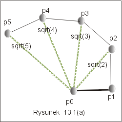
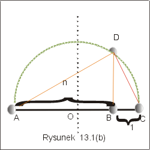
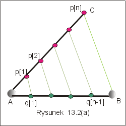
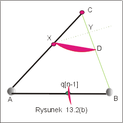

| « poprzedni punkt | nastêpny punkt » |
Do wielu zas³ug Euklidesa mo¿emy dodaæ jeszcze tê, ¿e wprowadzi³ w geometrii
pojêcie konstrukcji euklidesowej, tzn. metody, w której opisano zestaw ¶rodków z
jakich wolno nam korzystaæ, zestaw elementarnych akcji jakimi mo¿emy siê
pos³ugiwaæ, oraz metodê postêpowania prowadz±c± do powstania obiektu
geometrycznego. Konstrukcja euklidesowa, to nic innego jak algorytm dzia³aj±cy w
specyficznym ¶rodowisku.
Algorytmy omawiane w tym punkcie, to konstrukcje euklidesowe, wykorzystuj±ce
operacje, których nauczyli¶my siê w szkole podstawowej, a wykonujemy je na
papierze za pomoc± cyrkla i linijki.
Problem Obliczanie pierwiastka
kwadratowego z liczby ca³kowitej.
Niech odcinek xy
reprezentuje jedno¶æ. Zadanie polega na znalezieniu pierwiastka
kwadratowego z danej liczby naturalnej n, sqrt(n).
Najprostsze rozwi±zanie wykorzystuje twierdzenie Pitagorasa. Je¶li jeden z boków trójk±ta prostok±tnego reprezentuje liczbê sqrt(i),
a drugi liczbê 1, to przeciwprostok±tna odpowiada liczbie sqrt(i+1) por.
rysunek 13.1(a).
Algorytm 1
|
Niezmiennikiem pêtli w tym algorytmie jest w³asno¶æ:
Rzeczywi¶cie, dla i=1 w³asno¶æ jest spe³niona, bo z za³o¿enia odcinek xy reprezentuje jedno¶æ. Je¶li w i-tym kroku d³ugo¶æ odcinka xp[i] wynosi sqrt(i), i zbudujemy trójk±t prostok±tny o jednym boku równym xp[i], a drugim równym jedno¶ci, to przek±tna na mocy twierdzenia Pitagorasa ma d³ugo¶æ sqrt(i+1). Po wykonaniu n-1 kroków, wychodzimy z pêtli z i = n oraz odcinkiem xp[n] d³ugo¶ci sqrt(n).
Wszystkie operacje tego algorytmu mo¿na zrealizowaæ za pomoc± cyrkla i
linijki.
|  |
 |
Inne rozwi±zanie tego samego problemu polega na wykorzystaniu twierdzenia
Pitagorasa i w³asno¶ci, ¿e k±t oparty na ¶rednicy ko³a jest prosty, por. rysunek
13.1(b).
Algorytm 2
|
Poprawno¶æ
Z konstrukcji wynika, ¿e BC bêdzie odcinkiem jdnostkowym, a AC zawiera (n+1) jednostek. Poniewa¿ trójk±ty ADC, ADB i DBC s± trójk±tami prostok±tnymi, zatem
n2 +DB2 = AD2, 1+DB2 = DC2 , (n+1)2 = AD2 +DC2.
St±d (n+1)2 = n2 +1 + 2 DB2 i ostatecznie sqrt(n) = DB.
W tym przypadku zastosujemy twierdzenie Talesa, por. rysunek 13.2(a).
Algorytm 3
|
Punkty q[i] dziel± odcinek AB na n równych czê¶ci. Rysowanie prostej równoleg³ej do danej prostej i przechodz±cej przez dany punkt nie jest ca³kiem proste, ale ca³kowicie da siê wykonaæ za pomoc± cyrkla i linijki. A oto algorytm, por. rysunek 13.2(b):
1. Niech X=p[i]. Z punktu X zakre¶l okr±g promieniem o d³ugo¶ci 1.
2. Punkt przeciêcia z prost± BC oznaczmy przez D. Powsta³ trójk±t równoramienny
o wierzcho³kach X,C,D.
3. Podziel odcinek DC (podstawa trójk±ta) na po³owê i znajd¼ punkt
¶rodkowy Y. Odcinek XY jest wysoko¶ci± trójk±ta i równocze¶nie
odleg³o¶ci± szukanej prostej równoleg³ej od prostej BC.
4. Z punktu B zaznacz punkt q[i], odleg³y od B o d³ugo¶æ odcinka XY.
Wyznaczony w³a¶nie odcinek to 1/m danego odcinka AB.
|  |  |
Pytanie 1: Jak podzieliæ dany k±t ABC na po³owê?
Zaproponuj algorytm.
| « poprzedni punkt | nastêpny punkt » |